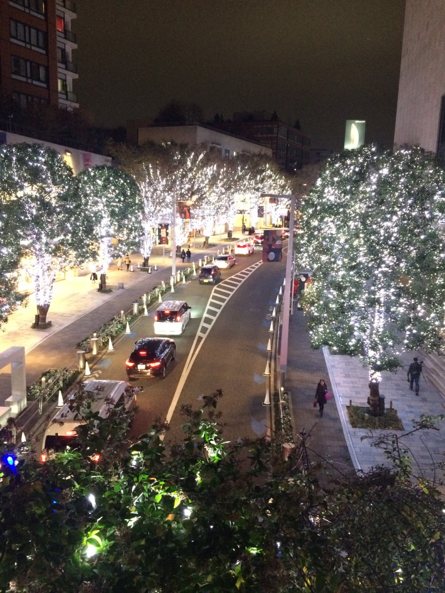

制作例として新潟津南町雪まつりのポスターを作るという設定でポスターを制作しました。
写真のレタッチ例

写真レタッチ(人物の消去など)のbefore(左)とafter(右)
制作例としてのポスター制作

ポスターのサンプル
ホームページ制作例
トップページの制作サンプルを下記します。ページに用いる素材はPhotoShopで加工し、
自分なりにではありますがワイヤーフレームを作ってから制作に取り掛かりました。
自分なりにではありますがワイヤーフレームを作ってから制作に取り掛かりました。
ランディングページのサンプル